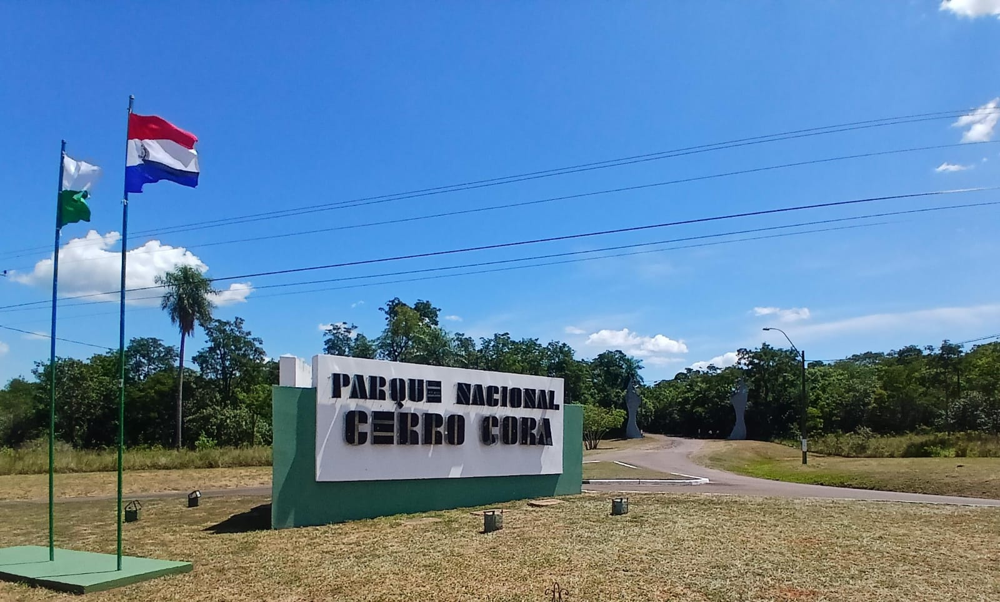
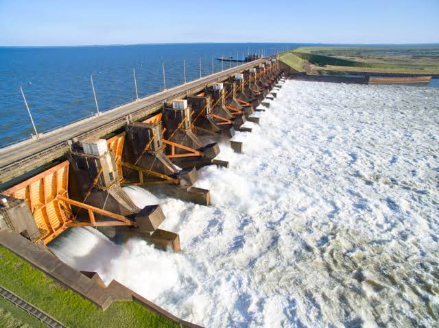
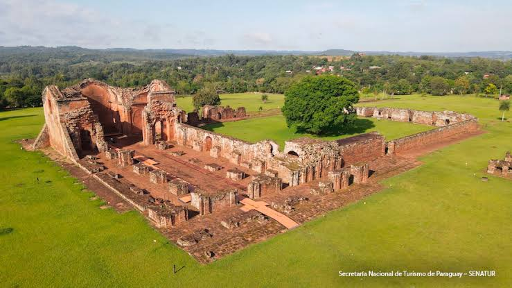

Bienvenidos a Paraguay
Paraguay es un país lleno de contrastes y riquezas naturales. Desde la majestuosidad del Parque Nacional Cerro Corá hasta la imponente Central Hidroeléctrica Yacyretá, pasando por la calidez de su gente y una gastronomía única. Te invitamos a explorar cada rincón de este destino fascinante.
“Paraguay te espera con los brazos abiertos para una experiencia inolvidable.”
Destinos Imperdibles
| Destino | Imagen | Descripción | Ubicacion |
|---|---|---|---|
Parque Nacional Cerro Corá |
 |
Considerado uno de los espacios naturales más valiosos del país. Con más de 12.000 hectáreas, es un sitio histórico y de belleza exuberante. Ideal para el ecoturismo y la aventura. | Ver en Google Maps |
Central Hidroeléctrica Yacyretá |
 |
Ubicada sobre el río Paraná, es uno de los principales atractivos turísticos de la región. Ofrece visitas guiadas para conocer su imponente infraestructura y el Museo Histórico Ambiental. | Ver en Google Maps |
Misiones Jesuíticas |
 |
Declaradas Patrimonio de la Humanidad por la UNESCO. Las reducciones jesuíticas, como la de Santísima Trinidad, son un testimonio vivo de la historia y la cultura guaraní. | Ver en Google Maps |